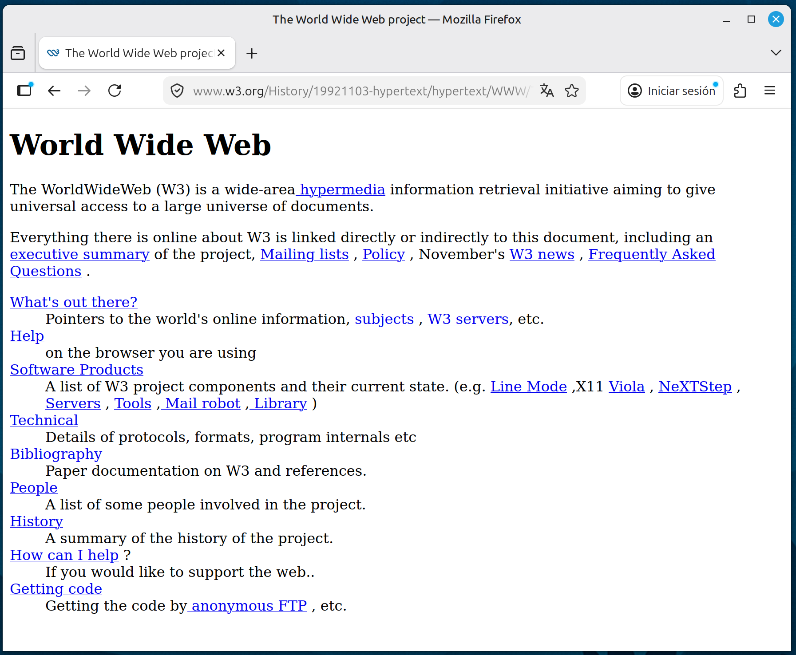

Páginas web
Las páginas web, también llamadas simplemente "webs", son documentos que se utilizan para publicar información en internet. Están diseñadas para ser visualizadas en un navegador, como Chrome, Firefox, Edge o Safari. Fueron inventadas por el británico Tim Berners-Lee y el belga Robert Cailliau mientras trabajaban en el CERN ("Conseil Européen pour la Recherche Nucléaire", Consejo Europeo para la Investigación Nuclear). La primera página web fue publicada en 1990. Era bastante rudimentaria para los estándares actuales, pero fue un avance fundamental. Puedes verla en este enlace:
https://www.w3.org/History/19921103-hypertext/hypertext/WWW/TheProject.html
Las páginas web se empezaron a hacer populares hacia 1995 y actualmente son una herramienta importante en la vida cotidiana de millones de personas.

La World Wide Web
Al conjunto de todos las páginas web que hay en el mundo se le llama la "World Wide Web", que podría traducirse como "la red mundial". De forma coloquial se conoce como "la web".
Cada página web tiene una dirección en la World Wide Web. Esta dirección web es única, no puede haber otra página con la misma dirección. A la dirección web también se le llama URL (de "Uniform Resource Locator", Localizador Uniforme de Recursos). La línea azul de arriba es un ejemplo de dirección web o URL.
Un sitio web ("website", en inglés) es una publicación formada por una página web, o un conjunto de páginas web interrelacionadas, que forma una unidad diferenciada. Ejemplos: un diario online, una página personal, etc.